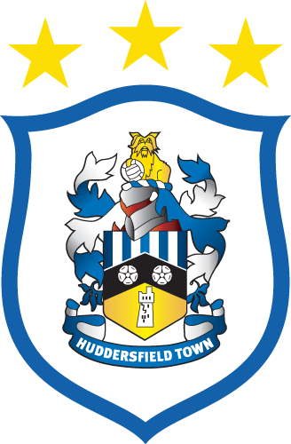

<!--
  Generated template for the LeagueTable8Page page.

  See http://ionicframework.com/docs/components/#navigation for more info on
  Ionic pages and navigation.
-->
<ion-header>
  <ion-navbar>
    <ion-title>LeagueTable8</ion-title>
  </ion-navbar>
</ion-header>

<ion-content padding class ="background">
    <br><br>
    <h3 ion-text color="white">
    Bottom 3 Relegation Teams 
  </h3> 
  <br><br>
  
  <br><br>
  <br>Position: 20th<br>
  <br>Points: 14<br>
  <br>Games Played: 35<br>
  <br>Games Won: 3<br>
  <br>Games Lost: 27<br>
  <br>Games Drawn: 5<br>


  <br><br><br>
<ol><li ion-button color="danger" (click)="backToLeagueTable()" class="button1">Back</li> </ol>

</ion-content>
